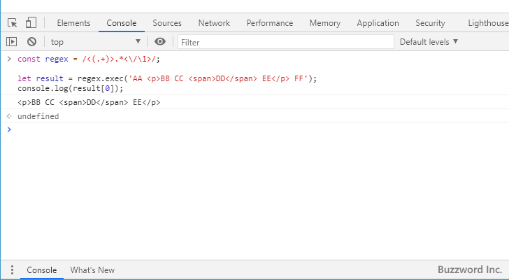

- Home ›
- 正規表現入門 ›
- 正規表現の色々な書き方
正規表現パターンでマッチした値と同じ値をパターンの別の場所でマッチさせる
キャプチャグループを使用することで、パターンの一部にマッチした値を取得することができますが、すでにマッチした値と同じ値をパターンの別の場所でマッチさせることができます。対象の文字列の中で複数の個所で同じ値にマッチするパターンを作成することができます。ここでは正規表現パターンでマッチした値と同じ値をパターンの別の場所でマッチさせる方法について解説します。
キャプチャした値と同じ値にマッチさせる
正規表現のパターンの中でキャプチャグループを使用することでパターン全体の一部分にマッチした文字列を取得することができます。(キャプチャグループについては「キャプチャグループを使って正規表現パターンの一部にマッチした文字列を取得する」を参照されてください)。
キャプチャグループでマッチした値を同じパターン内から参照し、既にキャプチャした値と同じ値にマッチするようにパターンに記述することができます。参照する場合は、キャプチャ1の値を参照するには \1 、キャプチャ2の値を参照するには \2 のようにパターン内に記述します。
\キャプチャ番号
次のサンプルをみてください。
Pattern ： <(.+)>.*</\1> String ： AA <p>BB CC <span>DD</span> EE</p> FF
このパターンでは <xxx> で始まり、 同じ値が記述された </xxx> までの文字列とマッチします。もしパターンの <(.+)> の部分が <p> とマッチしたのであれば、パターンの </\1> の部分は </p> にマッチします。
JavaScript を使って記述すると次のようになります。( JavaScript の正規表現リテラルでパターンを記述する場合、パターン内でスラッシュ(/)はバックスラッシュ(\)でエスケープしてください)。
const regex = /<(.+)>.*<\/\1>/;
let result = regex.exec('AA <p>BB CC <span>DD</span> EE</p> FF');
console.log(result[0]);
--> <p>BB CC <span>DD</span> EE</p>

キャプチャグループのパターンにマッチした <p> タグと、それに対応したタグ </p> にマッチさせることができました。
-- --
正規表現パターンでマッチした値と同じ値をパターンの別の場所でマッチさせる方法について解説しました。
( Written by Tatsuo Ikura )

著者 / TATSUO IKURA
初心者～中級者の方を対象としたプログラミング方法や開発環境の構築の解説を行うサイトの運営を行っています。